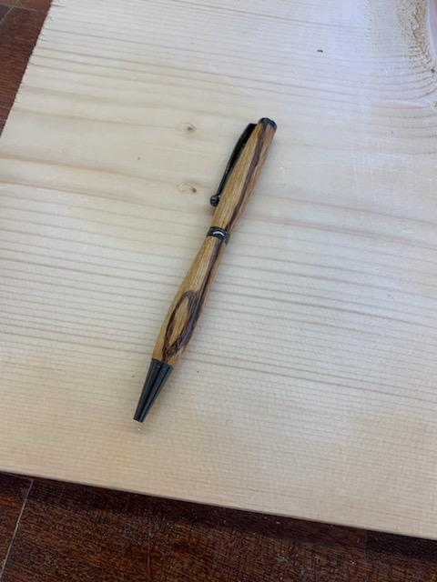
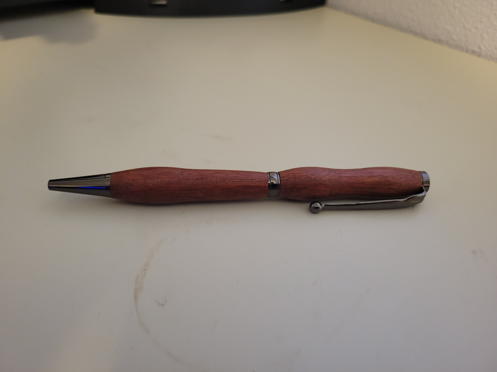
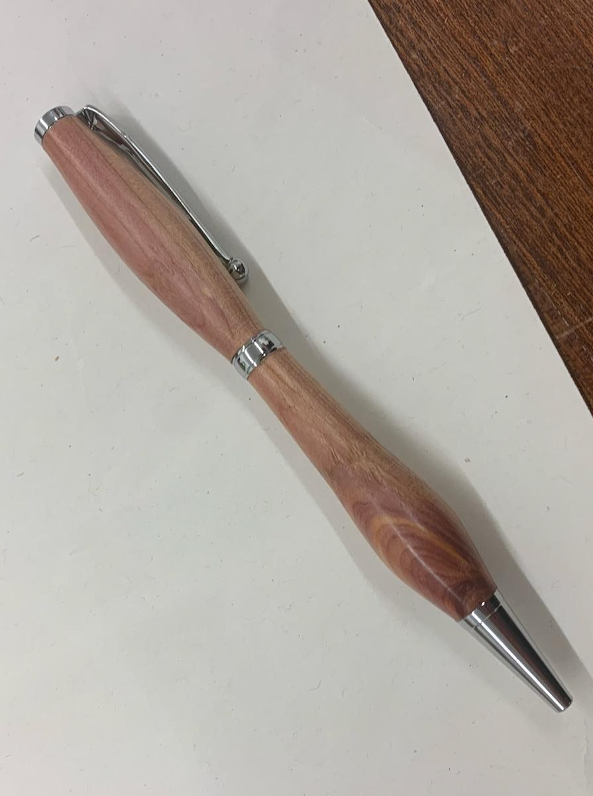
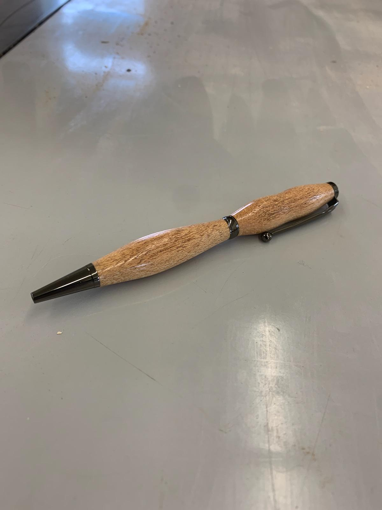
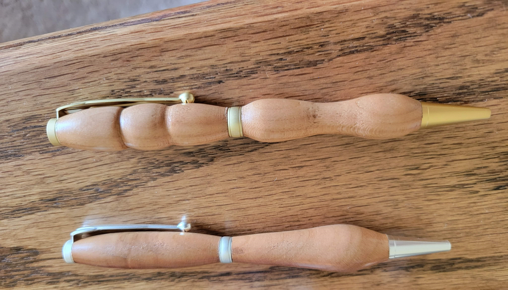
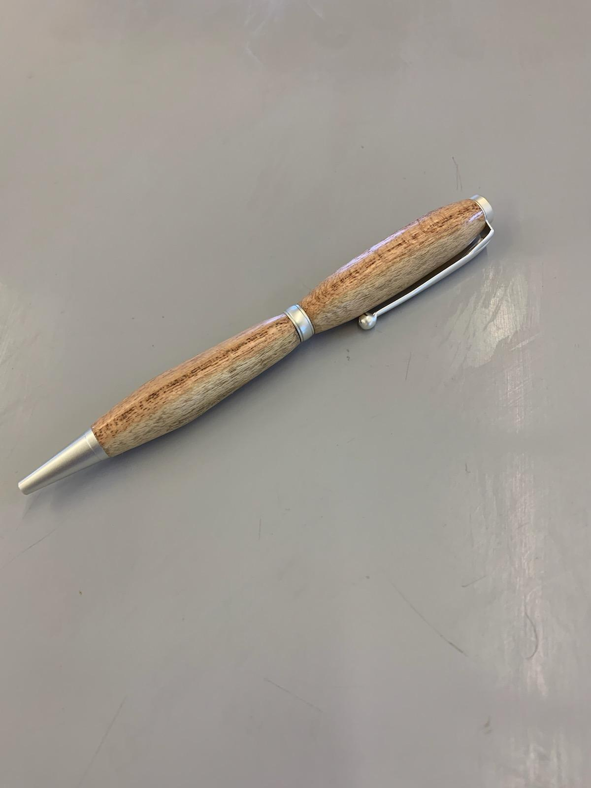
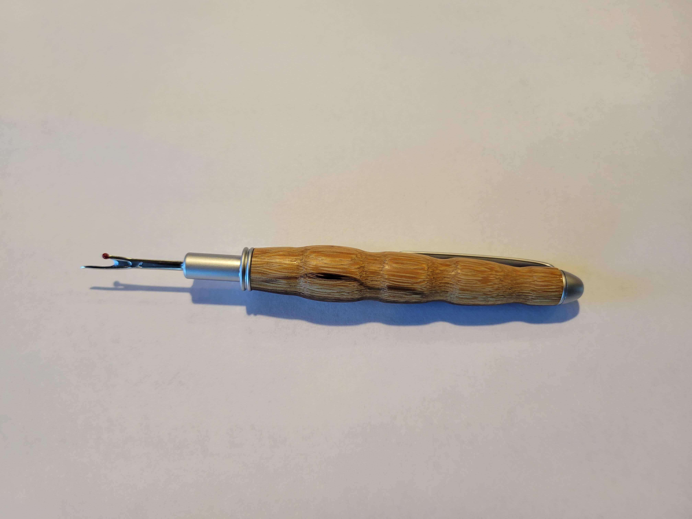
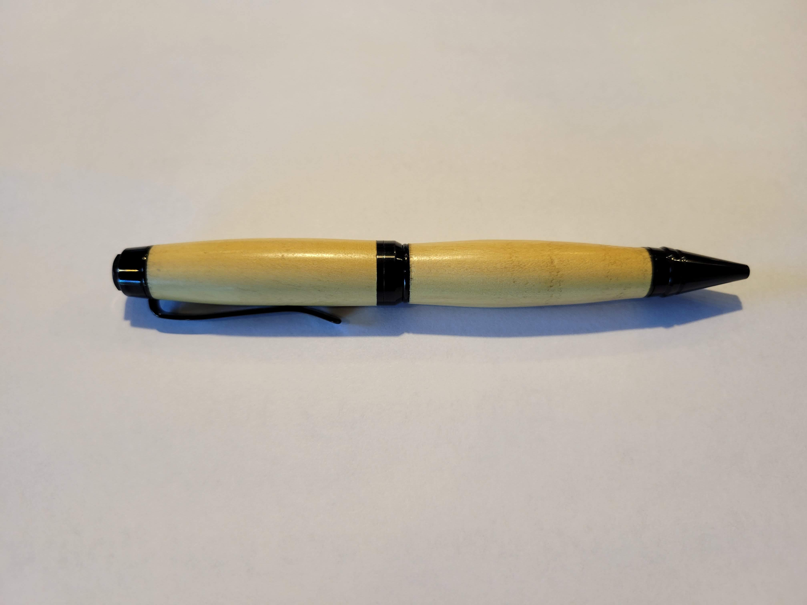
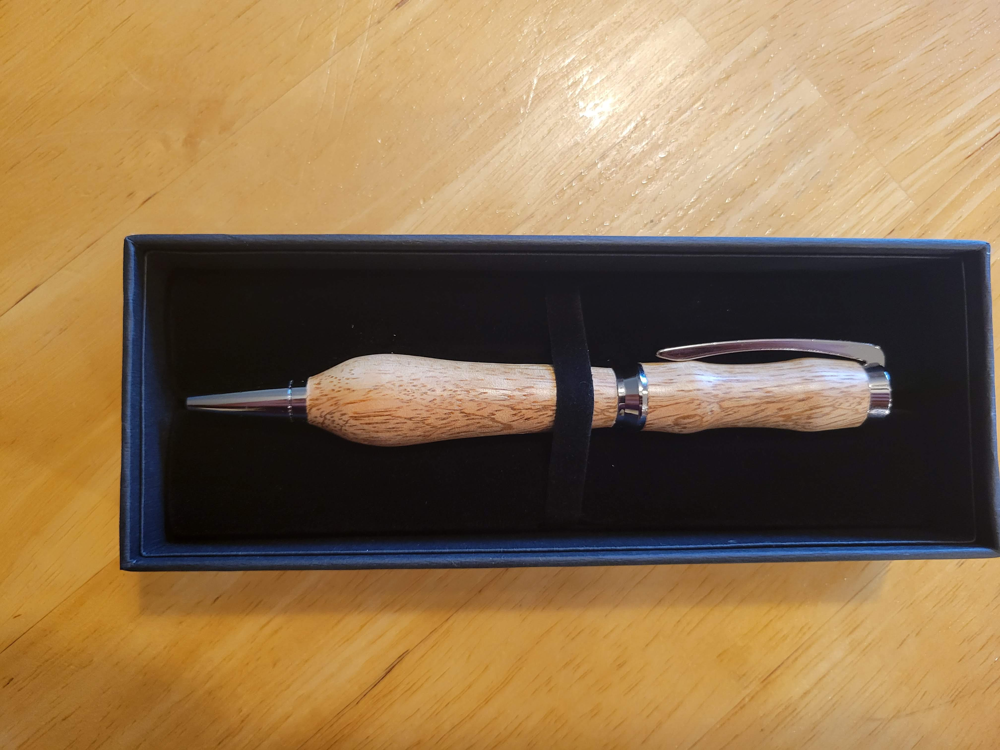

Ever since our family build the wood shop in 2015 I have wanted to try turning
pens. Eventually we got a lathe that we assembled out of two partial lathes. Then finally January 2023
we got the rest of tools to start making pens. Since then we have tried many pen kit designs and wood
types.
Image Gallery

Zebrawood
This is the very first pen I made. I had some zebra wood
pen blanks that I got in the hopes of being able to turn pens so I decided to make use of it.
The pen used a slimline pen design. The pen turned faster than I expected and turned out way better
than I expected for my first attempt.

Bloodwood
This is the second pen I made. In addition to the zebrawood
I had some bloodwood on hand. It sanded up very nicely and I was very happy with how it turned out.

Cedar
We bought some cedar from a local farmer for our cedar chest refurbish
project. I took a scrape of it to make into a Pen to hopefully give to the farmer when we go see more of his lumber
The cedar turned out beautiful but the wood grain isn't tight and dense enough to get a perfect surface.

Ash
This ash was found from some downed trees on the lake my grandma lives on.
My extended family has been on the lake for a very long time so I added this with a oak pen from the lake to a family gift
exchange. It was very popular and went to my cousin who is a lawyer and he uses them from his clients to sign items.

Cherry
These cherry pens were a request from my girlfriends dad for some of his
family. The cherry turned really nicely and I tried turning on on its end grain which produced a very unique and interesting
pattern which I intend to explore in the future.

Honey Locust
The wood for this pen came from some honey locust trees that at one point
were on my dad's employer property. The wood was used for some other projects and my dad got some small scrapes one of which
I turned into this pen which my dad gave as a retirement gift to an employee.

Zebra Wood Seam Ripper
Not really a pen but is made in a very similar
fashion to the pen I made my mom a seam ripper for mothers day 2023. It just so happened she broke
her seam ripper days before giving it to her. It worked out well enough my family made for other relatives who sew.

Yellow Heart
Made this pen as a fathers day present 2023 for my dad and choose
a the wood type as yellow heart and a black pen kit to make the same colors as work for him. This was my first time\
trying a larger pen size.

Mango Wood
Made a pen as a Christmas present for my girlfriend's dad in 2023
I found a chunk of mango wood at a wood store and chose it for this pen for its unique grain pattern and because I
had not previously seen or heard of mango in woodworking. It turned nicely and I tried a Concava pen kit for with it.